Drag.
Focus.
Rest.
Pomly for iPhone
One drag
sets the time.
sets the time.
One tap
starts focus.
starts focus.
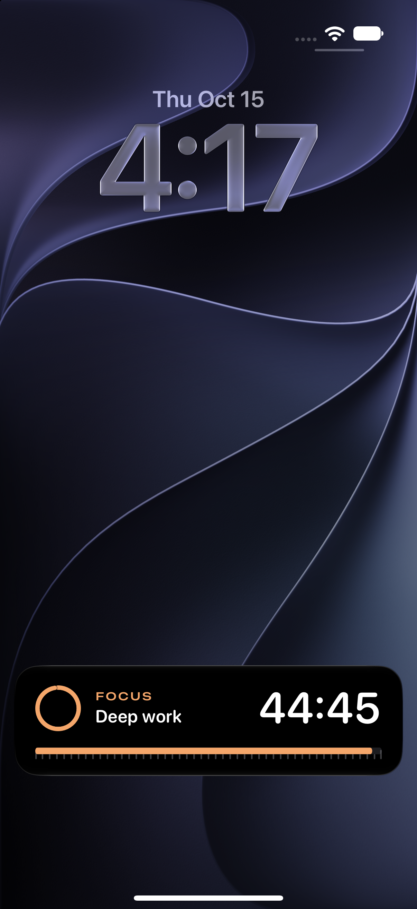
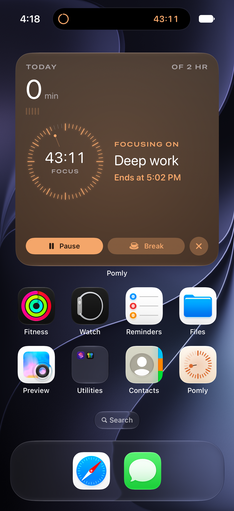
Live Activities · Widgets
Always one
glance away.
glance away.
Designed to disappear
Light or dark. Always calm.
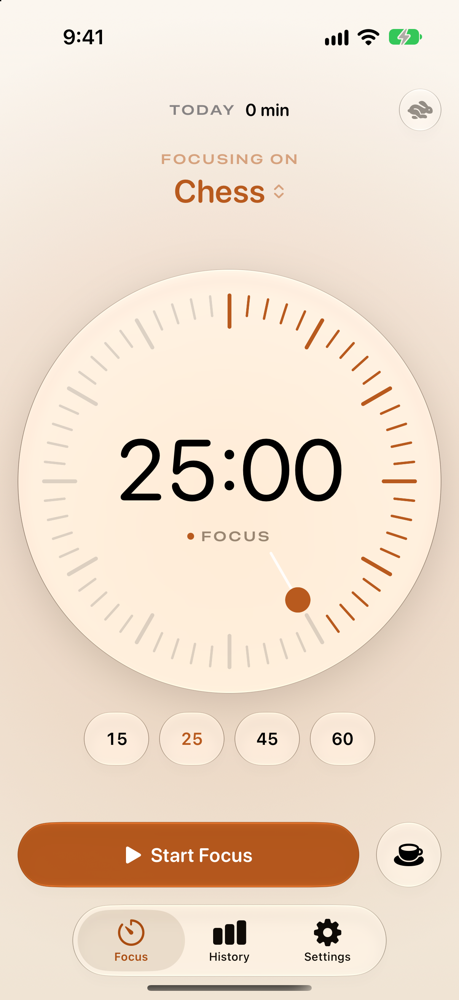
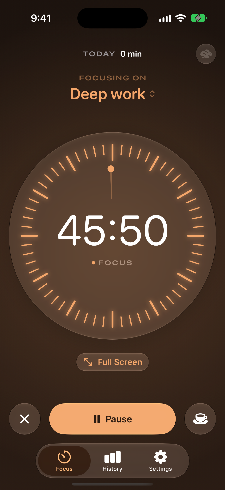
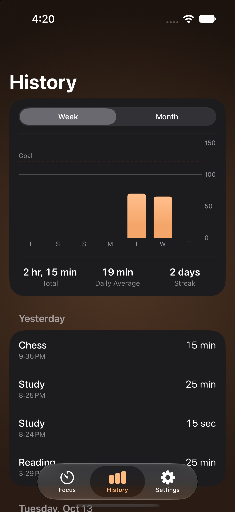
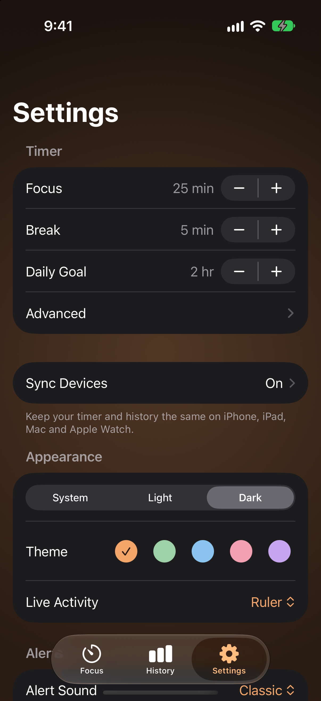
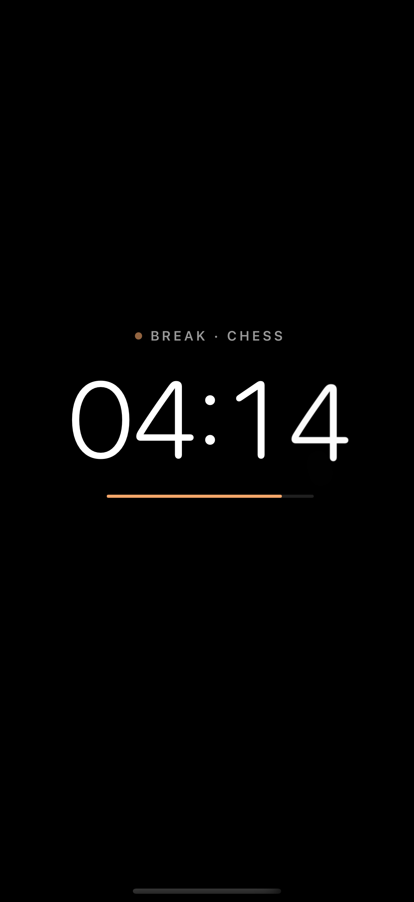
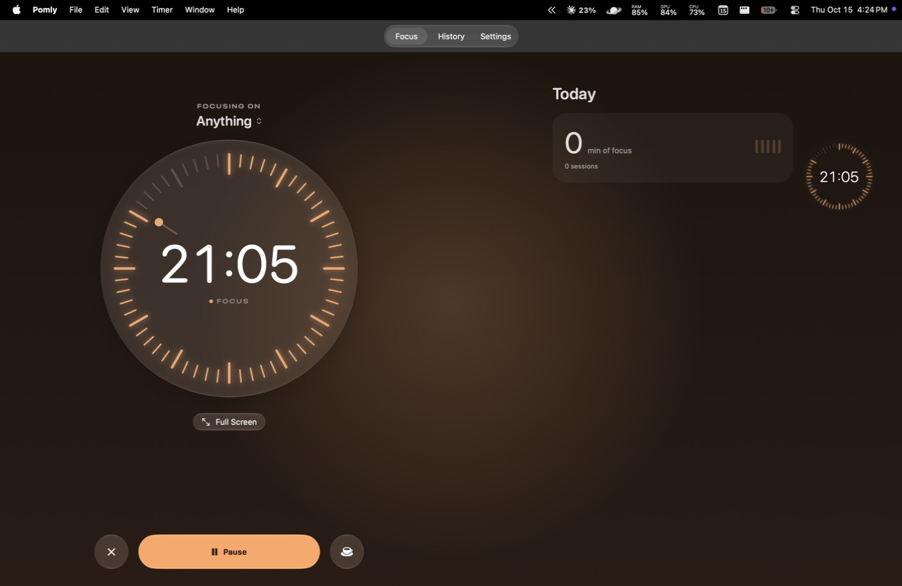
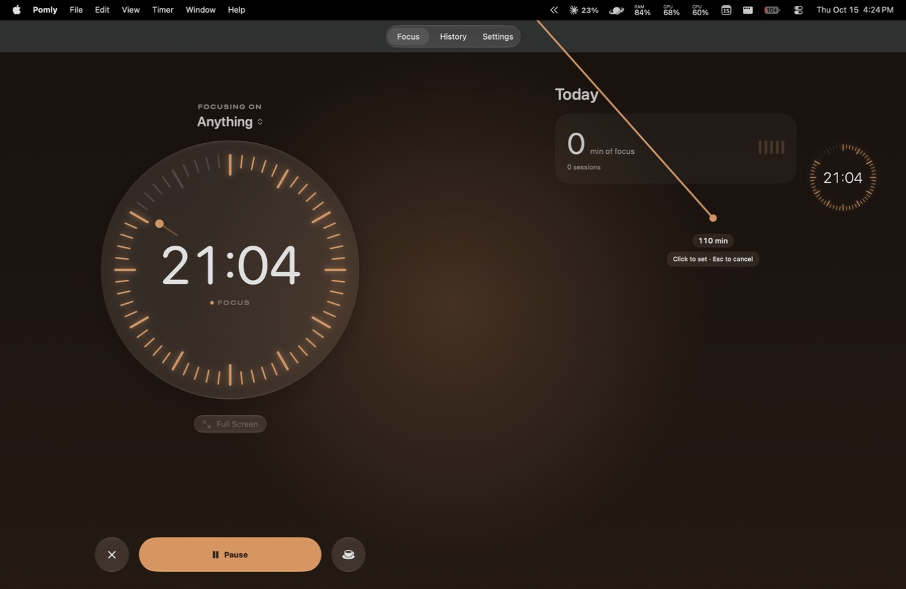
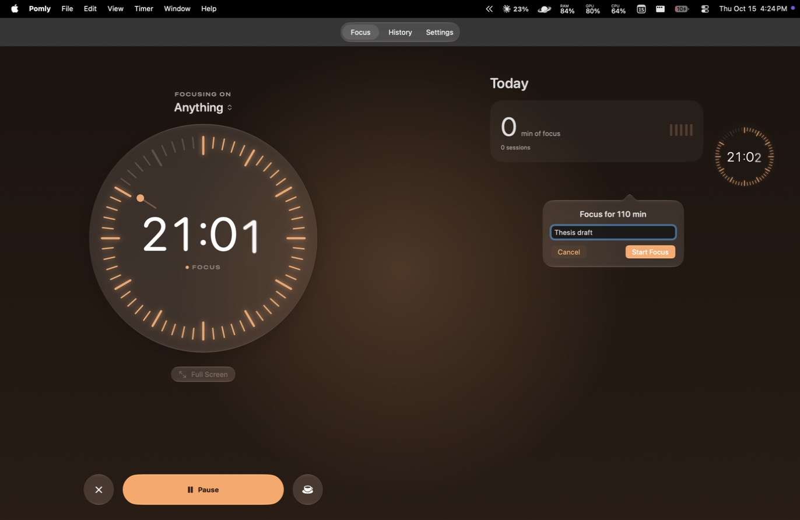
Pomly for Mac
Pull a timer
from the
menu bar.
from the
menu bar.
Name it.
It's running.
It's running.
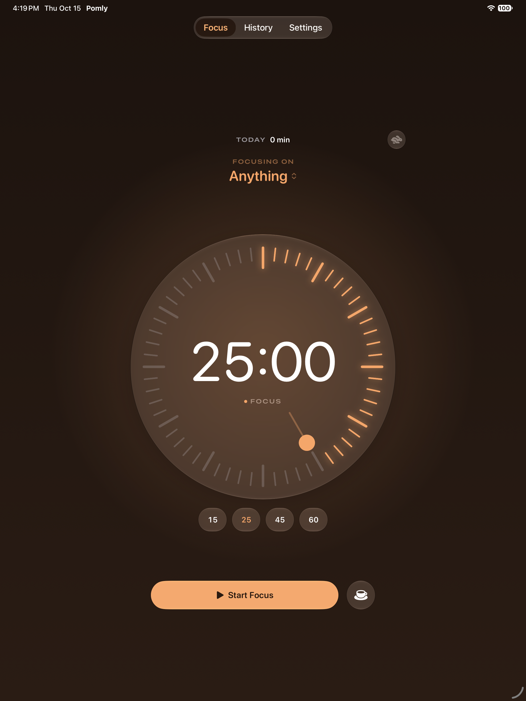
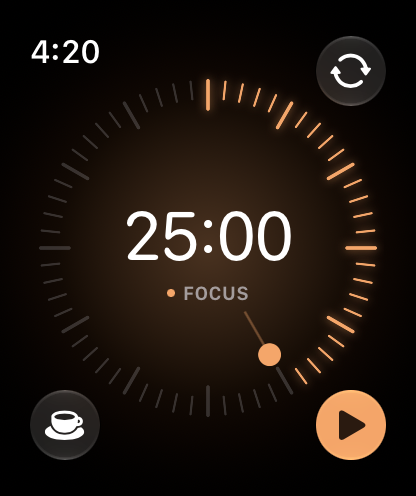
iPad · Apple Watch
Every
screen
you own.
screen
you own.
Sync
Every device. One timer.
7U6RMN
Pomly
Pomodoro Focus Timer
Free · Open source · No account
Install guide
Get Pomly on every device.
Step 1 · Mac
Two
commands.
commands.
Then it updates itself.
or: curl -fsSL tapariapurv.github.io/…/install.sh | bash
or: curl -fsSL tapariapurv.github.io/…/install.sh | bash
$
==> Tapping tapariapurv/pomly
$
==> Downloading Pomly-macOS.zip
==> Moving App 'Pomly.app' to '/Applications'
🍺 pomly was successfully installed!
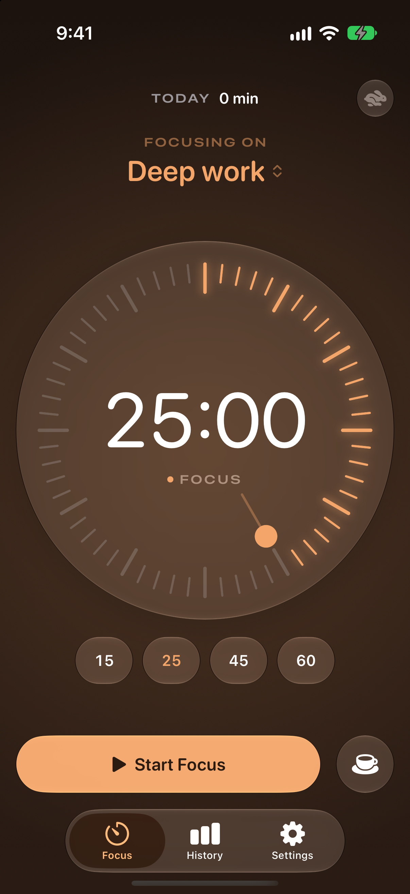
Step 2 · iPhone & iPad
Sideload once.
Updates on their own.
Updates on their own.
1
Install AltStore
altstore.io (free, signs with your Apple ID)
2
Add the Pomly source
tapariapurv.github.io/pomly/altstore.json
3
Tap Install
New versions arrive automatically
Step 3 · Apple Watch
Nothing
to do.
to do.
The Watch app installs with the iPhone app.
Step 4 · Sync
Pair with a code.
Settings › Sync Devices, then type the code on your other device.
Pomly
tapariapurv.github.io/pomly
iPhone · iPad · Mac · Apple Watch